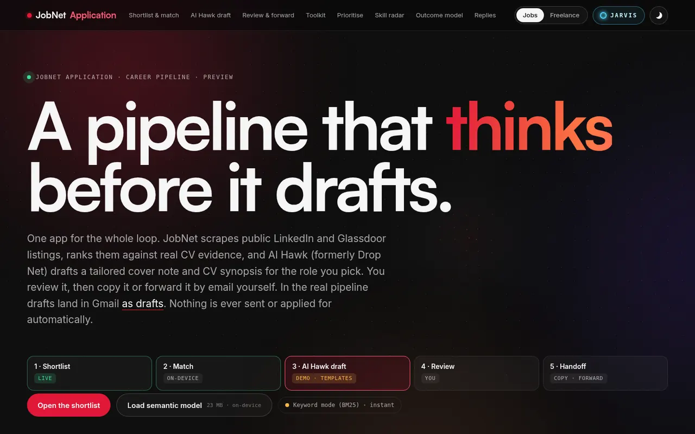

01 · Career pipeline
Public: drafts onlyJobNet Application
Problem Applying by hand is slow; blind auto-apply bots are unsafe.
Result A daily shortlist and tailored drafts on the public demo (no auto-apply). Separately, the private server pipeline may send a capped letter only when the posting prints a verified employer address and the letter passes quality checks; otherwise the send is held.
- Role
- Designed and operated the pipeline
- Stack
- Agents · Gmail · macOS automation · CV tailoring